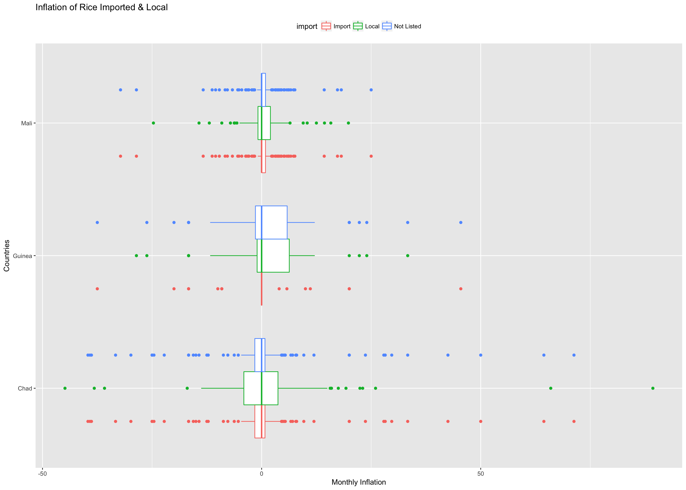

Rice
I started the analysis with the food that had the most entries which was rice with 67,003 entries. With each food, I started the with a worldwide view and then narrowed it down to a six region’s and then narrowed it further to specific countries.
The overall price for rice has increased in the last decade. Additionally there is a dramatic spike in the price from 2006 - 2007.
As for the inflation of rice, there are many observations greater than 10% which means the overall price of rice is unstable
In order to investigate the spikes from 2006 - 2007 a line chart with all regions plotted is apropietate.
You can see that in East Asia & Pacific, South Asia, Latin America & Caribbean and finally the Middle East & North Africa all seem to have a similar trend. While Europe & Central Asia has a slightly higher price. Most notably is Sub-Saharan Africa which has multiple spikes in price which is most likely the cause of the spikes in 2006. Unfortunately, you can see that we do not have a complete time series for all regions.
After a closer look at each region, it is easy to see that Sub-Saharan Africa had a volatile price increase. Sub-Saharan Africa is most prone to food price volatility out of all the regions due to shortages, poverty, and political conflict. Sub-Saharan Africa is why there were two spikes when all regions were plotted together.
In East Asia & Pacific the price drops for a few years but then picks up again. The price drop and slow increase could be due to the economies of certain countries, population changes, and technology of harvesting. Similarly, a price drop and increase exist in the Middle East & North Africa, but I do not have enough data to see if this was a trend. South Asia has the most controlled price since over 90% of the global rice is produced in the Asia-Pacific Region. The price of rice is stable for people in these countries FAO.
Price only tells half of the story. Inflation for each region will show which regions are stable and unstable. To do this, I created a box plot.
In reading the box plots note that larger boxes and more outliers are indicative of more variation in monthly inflation, therefore more instability in prices.
As expected Sub-Saharan Africa is the most unstable region with the most significant outliers. After investigating the data, I found that these outliers are caused by Liberia in 2006 and Rwanda in 2015. Sub-Saharan Africa has the highest and inconsistent prices probably due to domestic and global pressures contributing to inflation.
Latin America & Caribbean has the smallest quartile range, which means it is one of the most stable regions for rice price. Fluctuation of rice production may not impact the rice price as much as other regions since wheat, maize, and beans highly supplement this population’s diet. I also found that within the last ten years Latin America & Caribbean benefited from a growing economy and is trying to maintain stability.
Both Liberia and Nigeria have extremely high prices. The cause for the high prices is likely due to the aftermath of the second Liberian Civil War which ended in 2003 in addition to facing political corruption BBC. The high prices in Nigeria are likely caused by them for math and the after math of their 2008 food crisis. UMN
In order to look at inflation a box plot is great to compare many countries.
Histograms are usfeul to take a closer look at each country.

To compare prices across countries once again I created a table and a scatter plot comparing average inflation and the standard variation of inflation. Larger averages are associated with larger total price increases and larger standard deviations are indicative of price volatility
| country | avg_infla | stdev |
|---|---|---|
| Timor-Leste | 5.4017798 | 47.237622 |
| Liberia | 4.8354184 | 132.860933 |
| Syrian Arab Republic | 4.7134075 | 32.098102 |
| Ethiopia | 4.4593812 | 32.497017 |
| Armenia | 3.9938538 | 63.387260 |
| Bhutan | 2.3137748 | 11.070542 |
| Zambia | 2.1568600 | 22.272192 |
| Malawi | 2.0064171 | 20.486342 |
| Tajikistan | 1.9995267 | 19.334672 |
| Somalia | 1.9698665 | 25.866730 |
| Myanmar | 1.8671663 | 21.154988 |
| Cameroon | 1.8314953 | 21.247226 |
| Ghana | 1.8054960 | 16.793966 |
| Central African Republic | 1.7400635 | 20.449140 |
| Swaziland | 1.7167788 | 11.590222 |
| Yemen | 1.6324750 | 20.208453 |
| Iran (Islamic Republic of) | 1.4819561 | 8.150874 |
| Ukraine | 1.4260470 | 14.586262 |
| Turkey | 1.3296529 | 2.874918 |
| Colombia | 1.0556358 | 16.085126 |
| Chad | 1.0344999 | 16.408815 |
| Madagascar | 0.9904873 | 14.318798 |
| Bolivia | 0.9774073 | 23.803411 |
| United Republic of Tanzania | 0.9718870 | 12.625397 |
| Guinea | 0.9537512 | 13.265233 |
| Sri Lanka | 0.9102575 | 14.159792 |
| Democratic Republic of the Congo | 0.9011999 | 14.443713 |
| Burkina Faso | 0.9004965 | 18.781211 |
| Mozambique | 0.8682585 | 12.503398 |
| Guinea-Bissau | 0.8552664 | 10.489868 |
| Algeria | 0.8247176 | 10.356969 |
| Indonesia | 0.7705247 | 2.054337 |
| Nepal | 0.6778352 | 10.910343 |
| Jordan | 0.6672133 | 6.315960 |
| Nigeria | 0.6502781 | 11.783688 |
| Mauritania | 0.6462405 | 11.961028 |
| Cape Verde | 0.6328457 | 7.701727 |
| Philippines | 0.6063332 | 10.616044 |
| Kyrgyzstan | 0.5065342 | 9.452391 |
| Haiti | 0.4929802 | 8.990374 |
| Afghanistan | 0.4658786 | 9.217594 |
| Senegal | 0.4486627 | 9.580261 |
| Iraq | 0.4254396 | 8.451836 |
| Benin | 0.4193869 | 8.038088 |
| Rwanda | 0.3914386 | 14.679122 |
| Egypt | 0.3671392 | 8.522237 |
| Bangladesh | 0.3552173 | 7.601529 |
| Cote d’Ivoire | 0.3172731 | 7.528633 |
| India | 0.2854850 | 6.706518 |
| Mali | 0.2456774 | 6.998647 |
| Djibouti | 0.2431958 | 8.832855 |
| El Salvador | 0.1890508 | 5.257769 |
| Niger | 0.1276988 | 5.183075 |
| Peru | 0.0491141 | 2.272152 |
| Pakistan | 0.0062792 | 5.030260 |
With so many rice values, I have enough rice classified as import and local. I can compare the price of local and imported rice to see if there is a correlation between the two.
In every country, imported local and not listed follow the same trend with just a slight increase or decrease in price. The purple shows that they have the same price.
Does inflation for import and export have a significant difference?

Chad and Mali have an identical histograms for both Import and Not Listed which leads me to believe that rice I categorized as Not Listed may be imported rice. Additionally, for both these countries, Local rice has a much less stable price, which makes sense because of seasonal crops. Mali has three growing seasons, main season Oct-Dec, off-season Dec-Jan and deepwater rice May-July Ricepedia. Then Chad has two seasons, main season Oct - Dec and off-season June - July FAO. Off season rice has to be grown in well-irrigated areas.